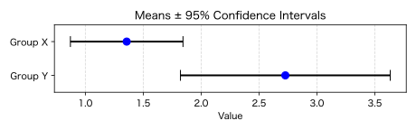

エラーバー
エラーバー（誤差棒、error bars）は誤差の範囲を表すための棒です。
例えばt検定で使ったLumleyのデータのそれぞれの平均値にエラーバーを付けて描いてみます。
import matplotlib.pyplot as plt
import numpy as np
from scipy import stats
# Lumleyのデータ
x = [1, 2, 1, 1, 1, 1, 1, 1, 1, 1, 2, 4, 1, 1]
y = [3, 3, 4, 3, 1, 2, 3, 1, 1, 5, 4]
def calculate_ci(data):
mean = np.mean(data)
lo, hi = stats.ttest_1samp(data, 0).confidence_interval()
return mean, [mean - lo, hi - mean]
mean_x, ci_x = calculate_ci(x)
mean_y, ci_y = calculate_ci(y)
labels = ['Group X', 'Group Y']
means = [mean_x, mean_y]
cis = [ci_x, ci_y]
plt.figure(figsize=(6.4, 2)) # デフォルトは6.4×4.8インチ
plt.errorbar(
means, labels,
xerr=np.transpose(cis),
fmt='o',
color='blue',
ecolor='black',
capsize=6,
elinewidth=2,
markersize=8
)
# Y軸を反転させて上をX、下をYにする
plt.gca().invert_yaxis()
# グラフの見栄えを調整
plt.xlabel('Value')
plt.title('Means ± 95% Confidence Intervals')
plt.grid(axis='x', linestyle='--', alpha=0.5)
plt.ylim(1.5, -0.5)
plt.tight_layout()
plt.savefig('260613a.svg')
plt.show()
